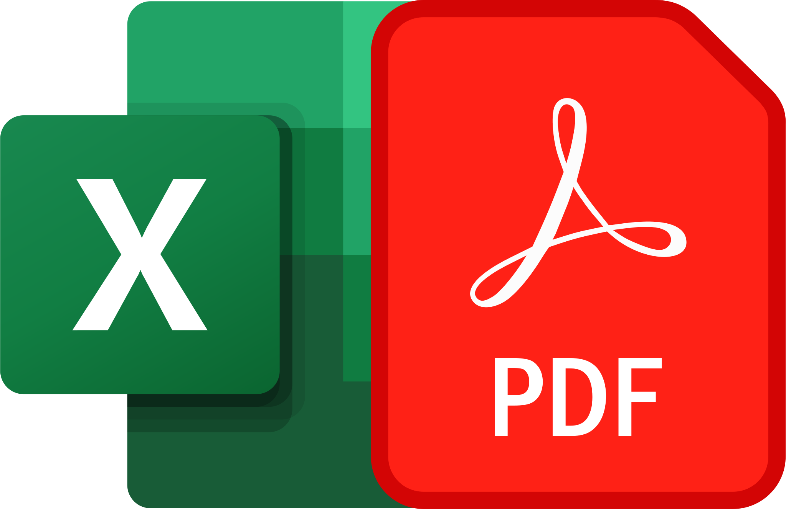

Acerca de
SISTEMA DE ADMINISTRACION LOGISTICA – S.I.A.L.
Este Sistema esta diseñado para uso del área de ABASTECIMIENTOS y ALMACEN de las entidades del Gobierno Local, Gobierno Regional y Gobierno Nacional. Es elaborado por especialistas y profesionales con amplia experiencia laboral en el Sector Público (Contador e Ingeniero de Sistemas).
Módulos del Sistema
-
Módulo de Abastecimiento
- Elaboración de Solicitud de Cotización
- Elaboración del Cuadro Comparativo de Cotizaciones
- Registro y control de Contratos
- Elaboración de Orden de Compra
- Elaboración de Orden de Servicio
-
Módulo de Almacén
- Elaboración de Inventario Inicial de Bienes de Almacén
- Elaboración de Pedido – Comprobante de Salida (PECOSAS)
- Internamiento de Bienes según Orden de Compra, Inventario y NEAs
- Elaboración de Notas de Entrada a Almacén (NEAs)
-
Módulo de Control de Combustible
- Elaboración de Vales
- Elaboración de Liquidación de Vales
-

Módulo de Caja/Recaudacion
- Recaudacion de Ingresos
- Reportes
-

Reportes
- Emisión de REPORTES GENERALES (Adquisiciones por meta, Movimiento de Bienes, Notas de contabilidad mensual, Kardex, Bincard y Otros (incluye en Formato PDF y para Exportar a Excel).
- Generación de Archivo para el registro de información en el SEACE, de las Órdenes de Compra y Servicios, de conformidad a la Directiva N° 007-2012-OSCE/CD, Resolución N° 269-2013-OSCE/PRE y Comunicado N° 002-2013-OSCE/DTN